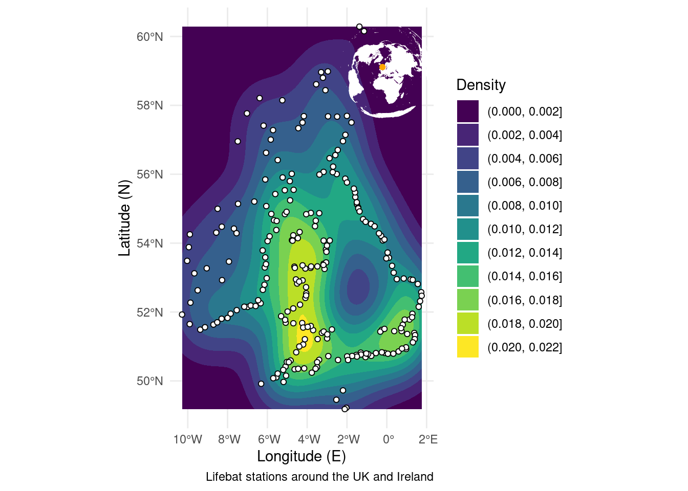
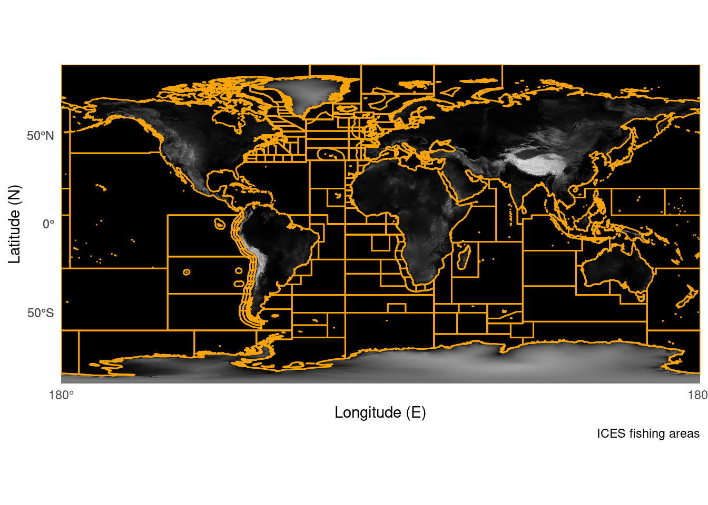
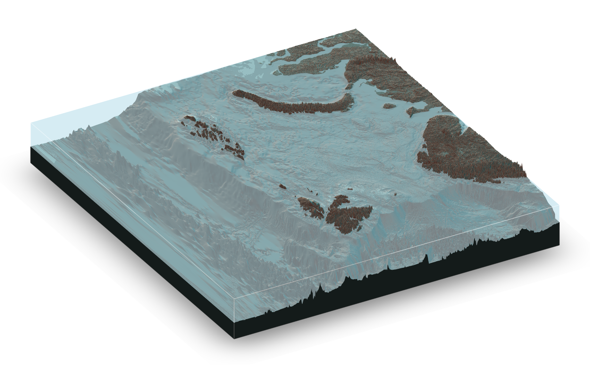

6 Extra Tools

As a final bonus I’ve included a few examples of other things which can help you in your map making with R. These didn’t really fit anywhere else, but are tricks I use all the time!
6.1 Insets
It can be really helpful to have a smaller plot on top of a bigger plot (an inset window). You can do this with any kind of plot, but it’s particularly useful for maps, as it allows you to show zoomed in views, or positions relative to larger landmasses. The general workflow is to make two plots before combining them
## Create a map of the world with a point marked on it
land <- rnaturalearth::ne_countries(scale = "medium", returnclass = "sf") %>% # Import a world map
sf::st_transform(crs = 3035) # Transform the polygons to a new projection
point <- data.frame(x = 0, y = 60) %>% # Set your coordiantes
sf::st_as_sf(coords = c("x", "y"), crs = 4326) %>% # Convert to SF object
sf::st_transform(crs = 3035) # Transform to a new crs
World_map <- ggplot() + # Start the plot
geom_sf(data = land, fill = "white", colour = "white", size = 0.1) + # Add the land polygons
geom_sf(data = point, colour = "orange") + # Add a marked point
theme_void() # Use an aesthetic template
## Create the zoomed in map for RNLI stations
RNLI <- read.csv("./Data/RNLI.csv") %>% # Import the points again
sf::st_as_sf(coords = c("X", "Y"), crs = 4326) # Convert to sf points using the x and y column as coordinates
RNLI_map <- ggplot(RNLI) + # Start the plot
stat_density_2d_filled(mapping = ggplot2::aes(x = purrr::map_dbl(geometry, ~.[1]), # Calculate density from the sf object
y = purrr::map_dbl(geometry, ~.[2]))) +
geom_sf(fill = "white", colour = "black", shape = 21) + # Add the points on top
theme_minimal() + # Use an aesthetic template
labs(x = "Longitude (E)", y = "Latitude (N)", # Add labels
fill = "Density",
caption = "Lifebat stations around the UK and Ireland")
## Combine the two plots
RNLI_map + # Start with the biggest map
annotation_custom(ggplotGrob(World_map), # Add the world map
xmin = -3, xmax = 3, # Specify the window the inset sits in
ymin = 57.5, ymax = 60.5)
6.2 Backgrounds
Similarly to stacking plots on top for an inset, you may want to put an image underneath your current plot. This can be a fast way of plotting something like a detailed map of the world behind your data, instead of asking R to calculate one itself and overworking your computer. The thing to remember here is to make sure the image has the same dimensions as the plot you’re making as the overlay.
ICES <- sf::st_read("./Data/ICES_areas/", quiet = TRUE) # Import the polygons from a shapefile
ggplot() + # Start a plot
ggpubr::background_image(png::readPNG("./book/elevation.png")) + # Add the image of the world
geom_sf(data = ICES, size = 0.5, colour = "orange", fill = NA) + # Add the polygons
theme_minimal() + # Use an appearance template
labs(x = "Longitude (E)", y = "Latitude (N)", # Add some labels
caption = "ICES fishing areas",
fill = NULL) +
coord_sf(expand = FALSE, xlim = c(-180, 180), ylim = c(-90, 90)) # Ensure the plot size matches the image
6.3 3D
It’s also recently become possible to render 3d maps in R using the rayshader package. I would class these as “pretty” maps which may be useful for presentations. The code is a bit more complicated, and can be demanding on your computer, but the results are cool! For examples and blogs you can look here
